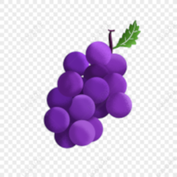

Quebras de linhas:
1
2
3
Símbolos:
™
©
Emoji: ❤ 😊
Imagem 1:

Imagem 2:
Imagem Externa:

Em um ensaio, artigo ou livro, uma introdução é uma seção inicial que indica o propósito e os objetivos da escrita a seguir. Isso geralmente é seguido pelo corpo e pela conclusão.
1 Ato ou efeito de desenvolver(-se); desenvolução. 2 Passagem gradual (da capacidade ou possibilidade) de um estágio inferior a um estágio maior, superior, mais aperfeiçoado etc.; adiantamento, aumento, crescimento, expansão, progresso.
O mercado secundário reúne títulos já adquiridos por investidores que, por algum motivo, desejam se desfazer do investimento antecipadamente. Logo, é possível encontrar possibilidades mais alinhadas ao que você procura.
Seção terciária – trata-se de um subitem, uma divisão de uma seção secundária; Seção quaternária – aparece dentro de uma seção terciária; Seção quinária – é uma subdivisão da seção quaternária.
Esta palavra vai estar muito grande
Esta palavra vai estar muito alta
O dia estar muito lindo
Oi como vai você
Vou acrescentar uma palavra grande
Vou acrescentar uma palavra pequena
Esta palavra vai estar riscado Amor
Esta palavra vai estar Sublinhado
42 + 10
H2O